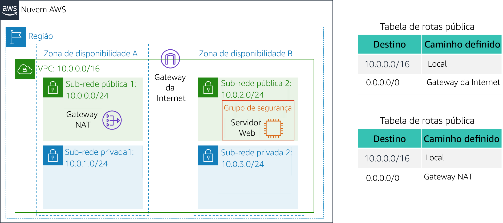
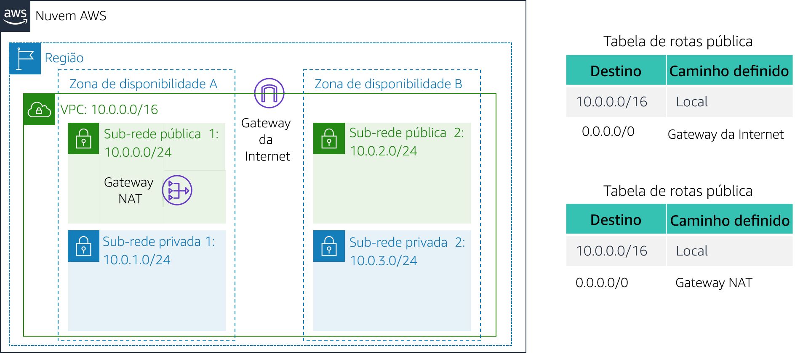

Laboratório 2: Criar sua VPC e executar um servidor web
Versão 4.6.6 (TESS1)
Neste laboratório, você usará a Amazon Virtual Private Cloud (VPC) para criar sua própria VPC e adicionará outros componentes a ela para produzir uma rede personalizada. Você também criará grupos de segurança para sua instância do EC2. Em seguida, você configurará e personalizará uma instância do EC2 para executar um servidor da Web e executá-lo na VPC.
A Amazon Virtual Private Cloud (Amazon VPC) permite executar recursos da Amazon Web Services (AWS) em uma rede virtual definida por você. Essa rede virtual é semelhante a uma rede tradicional operando no datacenter, com os benefícios do uso da infraestrutura escalável da AWS. Você pode criar uma VPC que abranja várias zonas de disponibilidade.
Cenário
Neste laboratório, você criará a seguinte infraestrutura:

Objetivos
Depois de concluir este laboratório, você será capaz de:
- Criar uma VPC.
- Criar sub-redes.
- Configurar um grupo de segurança.
- Executar uma instância EC2 em uma VPC.
Duração
O laboratório levará aproximadamente 30 minutos para ser concluído.
Acessar o Console de Gerenciamento da AWS
Na parte superior destas instruções, clique em Start Lab (Iniciar laboratório) para iniciar o laboratório.
Um painel Start Lab (Iniciar laboratório) é aberto exibindo o status do laboratório.
Aguarde até que a mensagem “Lab status: ready (Status do laboratório: pronto)” seja exibida e clique no X para fechar o painel Start Lab (Iniciar laboratório).
Na parte superior destas instruções, clique em AWS
Isso abrirá o Console de Gerenciamento da AWS em uma nova guia do navegador. O sistema fará o seu login automaticamente.
Dica: se uma nova guia do navegador não for aberta normalmente, um banner ou um ícone na parte superior do navegador indicará que o navegador está impedindo que o site abra janelas pop-up. Clique no banner ou ícone e escolha "Allow pop ups" (Permitir pop-ups).
Organize a guia do Console de Gerenciamento da AWS para que ela seja exibida com estas instruções. Em um cenário ideal, você poderá ver as duas guias do navegador ao mesmo tempo, para facilitar o acompanhamento das etapas do laboratório.
Tarefa 1: Criar sua VPC
Nesta tarefa, você usará o assistente de VPC para criar uma VPC, um gateway da Internet e duas sub-redes em uma única zona de disponibilidade. Um gateway da Internet (IGW) é um componente da VPC que permite a comunicação entre instâncias na VPC e a Internet.
Depois de criar uma VPC, você poderá adicionar sub-redes. Cada sub-rede reside inteiramente dentro de uma zona de disponibilidade e não pode incluir outras zonas. Se o tráfego de uma sub-rede for roteado para um gateway da Internet, a sub-rede será chamada de sub-rede pública. Se a sub-rede não tiver uma rota para o gateway da Internet, ela será chamada de sub-rede privada.
O assistente também criará um gateway NAT, que é usado para fornecer conectividade com a Internet para instâncias do EC2 nas sub-redes privadas.
No Console de Gerenciamento da AWS, no menu Services (Serviços), clique em VPC.
Clique em Launch VPC Wizard (Iniciar o assistente de VPC)
No painel de navegação esquerdo, clique em VPC with Public and Private Subnets (VPC com sub-redes públicas e privadas) (a segunda opção).
Clique em Select (Selecionar) e configure:
- VPC name (Nome da VPC):
Lab VPC (Laboratório VPC) - Availability zone (Zona de disponibilidade): selecione a primeira zona de disponibilidade
- Public subnet name (Nome da sub-rede pública):
Public Subnet 1 (Sub-rede pública 1) - Availability Zone (Zona de disponibilidade): selecione a* primeira* zona de disponibilidade (a mesma usada acima)
- Private subnet name (Nome da sub-rede privada):
Private Subnet 1 - Elastic IP Allocation ID (ID de alocação de IP elástico): clique na caixa e selecione o endereço IP exibido
- VPC name (Nome da VPC):
Clique em Create VPC (Criar VPC)
O assistente criará a VPC.
Após a conclusão, clique em OK
O assistente provisionou uma VPC com uma sub-rede pública e uma sub-rede privada na mesma zona de disponibilidade, com tabelas de rotas para cada sub-rede:

A sub-rede pública tem o CIDR 10.0.0.0/24, o que significa que contém todos os endereços IP que começam com 10.0.0.x.
A sub-rede privada tem o CIDR 10.0.1.0/24, o que significa que contém todos os endereços IP que começam com 10.0.1.x.
Tarefa 2: Criar sub-redes adicionais
Nesta tarefa, você criará duas sub-redes adicionais em uma segunda zona de disponibilidade. Isso é útil para a criação de recursos em várias zonas de disponibilidade, a fim de fornecer alta disponibilidade.
No painel de navegação esquerdo, clique em Subnets (Sub-redes).
Primeiramente, você criará uma segunda sub-rede pública.
Clique em Create subnet (Criar sub-rede) e configure:
- Name tag (Tag de nome):
Public Subnet 2 (Sub-rede pública 2) - VPC: Lab VPC (VPC de laboratório)
- Availability zone (Zona de disponibilidade): selecione a segunda zona de disponibilidade
- IPv4 CIDR block (Bloco CIDR IPv4):
10.0.2.0/24
A sub-rede terá todos os endereços IP que começam com 10.0.2.x.
- Name tag (Tag de nome):
Clique em Create (Criar) e em Close (Fechar)
Agora, você criará uma segunda sub-rede privada.
Clique em Create subnet (Criar sub-rede) e configure:
- Name tag (Tag de nome):
Private Subnet 2 - VPC: Lab VPC (VPC de laboratório)
- Availability zone (Zona de disponibilidade): selecione a segunda zona de disponibilidade
- CIDR block (Bloco CIDR):
10.0.3.0/24
A sub-rede terá todos os endereços IP que começam com 10.0.3.x.
- Name tag (Tag de nome):
Clique em Create (Criar) e em Close (Fechar)
Agora, você configurará as sub-redes privadas para rotear o tráfego destinado à Internet para o gateway NAT de modo que os recursos na sub-rede privada possam se conectar à Internet e se manter privados ao mesmo tempo. Para fazer isso, configure uma tabela de rotas.
Uma tabela de rotas contém um conjunto de regras, chamadas de rotas, usadas para determinar para onde o tráfego de rede é direcionado. Toda sub-rede em uma VPC deve ser associada a uma tabela de rotas, que controla o roteamento para a sub-rede.
No painel de navegação esquerdo, clique em Route Tables (Tabelas de rotas).
Selecione a tabela de rotas com Main = Yes (Principal = Sim) e VPC = Lab VPC (VPC de laboratório). (Expanda a coluna VPC ID (ID da VPC), se necessário, para visualizar o nome da VPC.)
No painel inferior, clique na guia Routes (Rotas).
Observe que Destination 0.0.0.0/0 (Destino 0.0.0.0/0) está definido como Target nat-xxxxxxxx (nat-xxxxxxxx de destino). Isso significa que o tráfego destinado à Internet (0.0.0.0/0) será enviado ao gateway NAT. Em seguida, o gateway NAT encaminhará o tráfego para a Internet.
Essa tabela de rotas está sendo usada para rotear o tráfego de sub-redes privadas. Agora, você adicionará um nome à tabela de rotas para facilitar seu reconhecimento no futuro.
Na coluna Name (Nome) dessa tabela de rotas, clique no lápis, digite
Tabela de rotas privadase clique emNo painel inferior, clique na guia Subnet Associations (Associações de sub-rede).
Agora você associará essa tabela de rotas às sub-redes privadas.
Clique em Edit subnet associations (Editar associações da sub-rede)
Selecione as duas Private Subnet 1 e Private Subnet 2.
Você pode expandir a coluna Subnet ID (ID de sub-rede) para visualizar os nomes das sub-redes.
Clique em Save (Salvar)
Agora, você configurará a tabela de rotas usada pelas sub-redes públicas.
Selecione a tabela de rotas com ** Main = No (Principal = Não)** e VPC = Lab VPC (e desmarque todas as outras sub-redes).
Na coluna Name (Nome) dessa tabela de rotas, clique no lápis , digite
Public Route Table (Tabela de rotas pública)e clique emNo painel inferior, clique na guia Routes (Rotas).
Observe que Destination 0.0.0.0/0 (Destino 0.0.0.0/0) está definido como Target igw-xxxxxxxx (igw-xxxxxxxx de destino), que é o gateway da Internet. Isso significa que o tráfego destinado à Internet será enviado diretamente para ela pelo gateway da Internet.
Agora, você associará essa tabela de rotas às sub-redes públicas.
Clique na guia Subnet Associations (Associações de sub-rede).
Clique em Edit subnet associations (Editar associações da sub-rede)
Selecione as duas Public Subnet 1 (Sub-rede pública 1) e Public Subnet 2 (Sub-rede pública 2).
Clique em Save (Salvar)
Sua VPC agora tem sub-redes públicas e privadas configuradas em duas zonas de disponibilidade:

Tarefa 3: Criar um grupo de segurança da VPC
Nesta tarefa, você criará um grupo de segurança da VPC, que atua como um firewall virtual. Ao executar uma instância, você pode associar um ou mais grupos de segurança a ela. Você pode adicionar regras a cada grupo de segurança para permitir tráfego de entrada ou de saída nas instâncias associadas.
No painel de navegação esquerdo, clique em Security Groups (Grupos de segurança).
Clique em Create security group (Criar grupo de segurança) e configure:
- Security group name (Nome do grupo de segurança):
Web Security Group - Description (Descrição):
Enable HTTP access (Habilitar acesso HTTP) - VPC: Lab VPC (VPC de laboratório)
- Security group name (Nome do grupo de segurança):
No painel Inbound rules (Regras de entrada), selecione Add rule (Adicionar regra).
Defina as seguintes configurações:
- Type (Tipo): HTTP
- Source (Fonte): Anywhere (Qualquer lugar)
- Description (Descrição):
Permit web requests (Solicitações de permissão da Web)
Role até a parte inferior da página e clique em Create security group (Criar grupo de segurança).
Você usará esse grupo de segurança na próxima tarefa, ao executar uma instância do Amazon EC2.
Tarefa 4: Iniciar uma instância de servidor web
Nesta tarefa, você executará uma instância Amazon EC2 na nova VPC. Você configurará a instância para atuar como um servidor da Web.
No menu Services (Serviços), clique em EC2.
Clique em Launch Instance (Executar instância) e selecione Launch instance (Executar instância)
Primeiro, você selecionará uma imagem de máquina da Amazon (AMI), que contém o sistema operacional desejado.
Na linha do Amazon Linux 2 (na parte superior), clique em Select (Selecionar)
O Instance Type (Tipo de instância) define os recursos de hardware atribuídos à instância.
Selecione t2.micro, mostrado na coluna Type (Tipo).
Clique em Next: Configure Instance Details (Próximo: Configurar detalhes da instância)
Agora, você configurará a instância para ser executada em uma sub-rede pública da nova VPC.
Defina estas configurações:
- Network (Rede): Lab VPC (VPC de laboratório)
- Subnet (Sub-rede): Public Subnet 2 (Sub-rede pública 2) (não privada)
- Auto-assign Public IP (Atribuir IP público automaticamente): Enable (Habilitar)
Expanda a seção Advanced Details (Detalhes avançados) (na parte inferior da página).
Copie e cole este código na caixa User data (Dados do usuário):
# Install Apache Web Server and PHPyum install -y httpd mysql php# Download Lab fileswget https://aws-tc-largeobjects.s3.us-west-2.amazonaws.com/CUR-TF-100-ACCLFO-2/2-lab2-vpc/s3/lab-app.zipunzip lab-app.zip -d /var/www/html/# Turn on web serverchkconfig httpd onservice httpd startEsse script será executado automaticamente quando a instância for iniciada pela primeira vez. O script carrega e configura um aplicativo web PHP.
Clique em Next: Add Storage (Próximo: Adicionar armazenamento)
Você usará as configurações padrão para armazenamento.
Clique em Next: Add Tags (Próximo: Adicionar tags).
As tags podem ser usadas para identificar recursos. Você usará uma tag para atribuir um nome à instância.
Clique em Add Tag (Adicionar tag) e configure:
- Key (Chave):
Name (Nome) - Value (Valor):
Web Server 1 (Servidor Web 1)
- Key (Chave):
Clique em Next: Configure Security Group (Próximo: Configurar grupo de segurança)
Você configurará a instância para usar o grupo de segurança da Web criado anteriormente.
Selecione Selecionar um grupo de segurança existente
Selecione Grupo de segurança da Web.
Esse é o grupo de segurança que você criou na tarefa anterior. Ele permitirá acesso HTTP à instância.
Clique em Review and Launch (Verificar e iniciar)
Quando você receber um aviso de que não poderá se conectar à instância pela porta 22, clique em Continue (Continuar)
Examine as informações da instância e clique em Launch (Executar)
Na caixa de diálogo Select an existing keypair (Selecionar um par de chaves existente), selecione I acknowledge... (Eu reconheço...)
Clique em Launch Instances (Executar instâncias) e, em seguida, clique em View Instances (Visualizar instâncias)
Aguarde até que Web Server 1 (Servidor da Web 1) indique 2/2 checks passed (2/2 verificações aprovadas) na coluna Status Checks (Verificações de status).
Isso pode levar alguns minutos. Clique em atualizar na parte superior direita a cada 30 segundos para executar atualizações.
Agora, você se conectará ao servidor da Web em execução na instância do EC2.
Copie o valor Public DNS (IPv4) (DNS Público - IPv4) mostrado na guia Description (Descrição) na parte inferior da página.
Abra uma nova guia do navegador da Web, cole o valor Public DNS (DNS Público) e pressione Enter.
Você verá uma página da Web com o logotipo da AWS e os valores de metadados da instância.
A arquitetura completa que você implantou é:
Laboratório concluído
Parabéns! Você concluiu o laboratório.
Clique em End Lab (Encerrar laboratório) na parte superior desta página e, em seguida, clique em Yes (Sim) para confirmar que você deseja encerrar o laboratório.
Um painel será exibido com a mensagem: "DELETE has be initiated... You may close this message box now." (a EXCLUSÃO foi iniciada... Você pode fechar esta caixa de mensagem agora).
Clique no X no canto superior direito para fechar o painel.
Envie um e-mail com feedback, sugestões ou correções para: aws-course-feedback@amazon.com